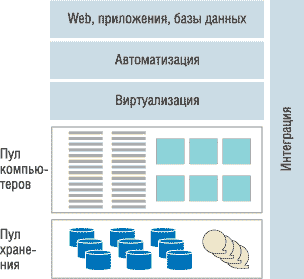
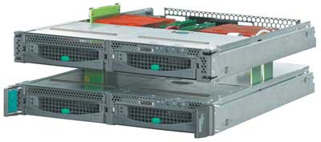
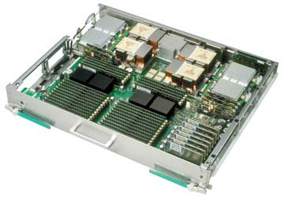
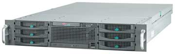

Любое предприятие представляет собой единый организм, и данные, относящиеся к функционированию различных его подразделений, логически взаимосвязаны. Поэтому изоляция данных в пределах локальных вычислительных комплексов отдельных подразделений снижает эффективность функционирования предприятия в целом.
Центры обработки данных (ЦОД) - это комплексные организационно-технические решения, предназначенные для создания высокопроизводительной, отказоустойчивой информационной инфраструктуры. Под ЦОД обычно понимают вычислительную инфраструктуру (набор взаимосвязанных программных и аппаратных компонентов, организационных процедур, мест размещения и персонала), предназначенную для безопасной централизованной обработки, хранения и предоставления данных, сервисов, приложений и обеспечивающую высокую степень виртуализации своих ресурсов. К основным задачам ЦОД в первую очередь относятся эффективное консолидированное хранение и обработка данных, предоставление пользователям прикладных сервисов, а также поддержка функционирования корпоративных приложений. В частности, современные ЦОД ориентированы в первую очередь на решение бизнес-задач путем предоставления услуг в виде информационных сервисов.
Консолидация вычислительных ресурсов и средств хранения данных в ЦОД позволяет снизить совокупную стоимость владения ИТ-инфраструктурой за счет эффективного использования технических средств, например, перераспределения нагрузок для оптимального решения бизнес-задач, а также за счет сокращения расходов на администрирование. Практика показывает устойчивую тенденцию к увеличению объемов данных и вычислений, которые дают существенно меняющуюся во времени нагрузку вследствие роста сложности и масштабов хозяйственно-учетных задач. Обработка постоянно возрастающего объема данных при значительном, зачастую плохо прогнозируемом увеличении нагрузки диктует особенно жесткие требования к вычислительным системам.
Динамический ЦОД - это концепция архитектуры аппаратного и программного обеспечения нового поколения, ориентированная на обслуживание пользователей и обеспечение такого уровня качества услуг, который может сделать вычисления по запросу реальностью. Эта концепция, разрабатываемая компанией Fujitsu Siemens Computers (http://www.fujitsu-siemens.com), позволит превратить многоуровневую ИТ-структуру, ориентированную на системы, в архитектуру, ориентированную на услуги. Это означает, например, что вычислительные ресурсы и ресурсы баз данных можно будет динамически настраивать на потребности приложений для повышения гибкости и производительности, а также для существенного прироста экономической эффективности ИТ-инфраструктуры. Обязательные элементы современного динамического ЦОД - это серверный комплекс и хранилище данных (рис. 1).
|  | Рис. 1. Модель динамического ЦОД.
|
Ключевая стратегия создания динамических ЦОД, Triole, в первую очередь предназначена для снижения совокупной стоимости владения TCO и предоставления группам разработчиков дополнительных возможностей создания инновационных предложений, которые смогут повысить эффективность, скорость реакции и непрерывность бизнеса. Triole также составляет часть долгосрочного плана Fujitsu Siemens Computers в сфере критически важных для бизнеса вычислений - BCO (Business Critical Computing) и охватывает широкий диапазон линеек продуктов ведущего европейского поставщика ИТ-решений уровня серверов, мэйнфреймов, систем хранения и промежуточного уровня.
Динамические центры обработки данных позволяют компаниям оперативнее реагировать на рыночную ситуацию. С помощью инфраструктуры динамических центров обработки данных руководители предприятий могут контролировать расходы и улучшать показатель окупаемости инвестиций. Кроме того, динамические ЦОД повышают гибкость и производительность работы приложений и улучшают эффективность использования ресурсов компании.
Primergy на базе Opteron
Краеугольным камнем динамического ЦОД можно назвать семейство серверов Primergy, которое позволяет создавать динамические ИТ-инфраструктуры. Fujitsu Siemens Computers существенно расширила ассортимент серверов стандартной архитектуры, добавив в модельный ряд Primergy системы на базе процессоров AMD Opteron. В этой продукции будут использоваться преимущества двухъядерной процессорной технологии, объединяющей два физических процессорных ядра в одном кристалле, что позволяет улучшить серверное решение для динамического ЦОД, в первую очередь за счет повышения эффективности, гибкости и надежности информационного центра.
В частности, модель Primergy RX220 на базе процессора AMD Opteron высотой 1U разработана специально для высокопроизводительных вычислений и хорошо дополняет модельный ряд стоечных систем. Эти недорогие серверы заполняют сектор систем начального уровня с минимальной плотностью на базе двух процессоров Opteron. Благодаря применению технических новинок, таких, как двухъядерные процессоры и объем памяти до 32 Гбайт с прямой адресацией, серверы Primergy RX220 полностью удовлетворяют потребности в производительности для бизнес-приложений.
Высокая производительность серверов Primergy базируется на архитектуре прямого подключения - Direct Connect (соединение HyperTransport), реализованной в процессорах AMD Opteron. За счет прямого подключения подсистемы ввода-вывода и памяти к процессору архитектура Direct Connect позволяет решить реальные проблемы и устранить узкие места архитектуры систем, обеспечивая оптимальную производительность памяти, сбалансированную пропускную способность, расширяемость подсистемы ввода-ввода, а также новые возможности для линейной симметричной многопроцессорной обработки.
Расширение экосистемы блейд-серверов
Важнейшее усовершенствование динамических ЦОД связано с расширением экосистемы блейд-серверов Primergy. Эта серверная архитектура основана на решениях Primergy BX630 с процессорами AMD Opteron (рис. 2) и позволяет соединять два двухпроцессорных сервера таким образом, что они работают как один физический четырехпроцессорный сервер. Впервые в серверной архитектуре реализованы одновременно технологии горизонтального и вертикального наращивания. Это позволит ИТ-менеджерам лучше использовать вычислительные возможности серверов и предоставит уровень гибкости, способный повысить оперативность динамического центра обработки данных.
|  | Рис. 2. Блейд-серверы Primergy BX630.
|
Сегодня клиенты ищут пути для повышения производительности приложений, которые работают на двух- или четырехпроцессорных серверах, основанных на отраслевых стандартах. Расширенная экосистема блейд-серверов Primergy компании Fujitsu Siemens предоставляет клиентам возможность соединения и отключения двухпроцессорных серверов, чтобы создать требуемую вычислительную среду, не приобретая дополнительного оборудования. Благодаря такой гибкости серверы Primergy BX630 представляют собой хороший выбор для терминальных серверов, Web-серверов или телекоммуникационных серверов в условиях высокой рабочей нагрузки. В соответствии с фактическими потребностями можно превращать двухпроцессорные серверы в четырехпроцессорные и наоборот. Так, в периоды пиковых вычислительных нагрузок можно создать четырехпроцессорный сервер из двух двухпроцессорных серверов, просто подключив их друг к другу с помощью технологии HyperTransport. Производительность сервера типа "2+2" соответствует производительности физического четырехпроцессорного сервера. При использовании двухъядерных процессоров Opteron этот подход позволяет объединить восемь физических вычислительных ядер в одной четырехпроцессорной блейд-системе. Такая концепция блейд-серверов одновременно идеальна для сценариев и горизонтального, и вертикального наращивания, повышая тем самым отдачу от имеющегося оборудования и уровень гибкости.
Из-за большой теплоотдачи серверов компании сталкиваются со все возрастающими проблемами охлаждения в центрах обработки данных. Эти проблемы становятся одними из основных, особенно для крупных ЦОД. Хороший баланс мощности процессоров Opteron, важнейшего компонента новой экосистемы блейд-серверов Primergy, позволяет снизить энергопотребление. Благодаря повышенной плотности монтажа систем удается сократить физические размеры группы серверов или разместить больше серверов в минимальном пространстве.
Блейд-серверы Primergy BX630 можно устанавливать в одном корпусе с серверами Primergy BX600 на базе процессоров Intel и использовать совместно. Концепция mix&match ("любое сочетание"), реализованная в расширенной экосистеме блейд-серверов, обеспечивает защиту инвестиций клиентов.
Динамическое ИТ-решение BladeFrame
Сегодня заказчики находятся в процессе оценки и интеграции динамических ИТ-решений, снижающих эксплуатационные расходы, упрощающих и увеличивающих гибкость использования приложений в коммерческих целях. Компания Fujitsu Siemens, создавшая ранее динамическое решение FlexFrame, в настоящее время выходит на новые уровни виртуализации. Она предоставляет заказчикам два взаимодополняющих варианта динамических ИТ-решений: FlexFrame, предназначенное для отдельных приложений, например, SAP, и решение Primergy BladeFrame для гетерогенных сред приложений.
По мнению экспертов, стратегический OEM-альянс Fujitsu Siemens Computers с американской компанией Egenera (http://www.egenera.com), которая специализируется на решениях, оптимизирующих работу центров обработки данных, приведет к повышению уровня гибкости и рентабельности динамических ЦОД. Для достижения максимальной эффективности использования ИТ решение Egenera BladeFrame включено в модельный ряд серверов Primergy. Fujitsu Siemens Computers будет эксклюзивным поставщиком решений Primergy BladeFrame в регионе EMEA. Кроме того, в рамках заключенного соглашения планируется совместное проведение научно-исследовательских работ и тестирование решений.
Руководство Fujitsu Siemens Computers полагает, что данное соглашение служит естественным продолжением стратегии Triole и динамических ЦОД. Причем видение динамического ЦОД у обеих компаний взаимно дополняет друг друга. Топ-менеджеры Egenera, в свою очередь, особо подчеркивают, что их компании нужен был сильный партнер, один из лидеров ИТ-рынка, который разделял бы стратегию компании и имел достаточно сил и средств для реализации решений в регионе EMEA. Кроме того, данное соглашение создает основу для совместных исследований и разработок, которые принесут выгоду обеим компаниям и их заказчикам.
Primergy BladeFrame на базе процессоров Intel Xeon и AMD Opteron представляет собой динамический сервер уровня предприятия, который создает пул обезличенных, взаимозаменяемых серверных узлов. Он абстрагируется от составляющих пул компонентов (процессоров, сетей и дисковых накопителей) и работает с виртуальными серверами. В результате оборудование сервера не зависит от ОС (Linux или Windows) или же от приложений. В пуле Primergy BladeFrame отдельные компьютерные узлы фактически используются только как процессоры и ресурсы памяти (так называемые серверы без состояния - stateless) при помощи общих виртуальных интерфейсов ввода-вывода для локальных сетей (сетей хранения данных) - коммутаторов, которые назначаются ПО PAN (Processor Area Network) Manager.
Primergy BladeFrame BF 400 объединяет до 96 серверных процессоров на базе архитектуры x86, работающих под управлением ОС Linux или Microsoft Windows. Система состоит из корпуса, содержащего до 24 серверных модулей, центральные контроллеры с избыточностью, интегрированные коммутаторы с избыточностью, высокоскоростные интерфейсы с избыточностью и ПО PAN Manager. Модель базового уровня Primergy BladeFrame BF 200 включает до шести серверных модулей и два модуля управления.
64-разрядные серверы на базе Intel Xeon
64-разрядные вычислительные технологии - один из важнейших компонентов концепции динамического ЦОД, направленной на удовлетворение возрастающей потребности в средствах автоматизации, виртуализации и интеграции. Созданные на базе 64-разрядных процессоров Intel Xeon MP, новые серверы Primergy TX600 S2 и RX600 S2 обладают высокой производительностью и позволяют адресовать более 4 Гбайт как виртуальной, так и физической памяти, что делает их хорошими решениями для выполнения критически важных приложений, таких, как требовательные к подсистеме памяти СУБД и ERP-системы. Для обеспечения высокой степени надежности и готовности эти серверы оснащены встроенными контроллерами MegaRAID, модулями памяти, поддерживающими горячую замену, средствами зеркалирования памяти и организации RAID-массивов памяти. Кроме того, эти модели серверов поставляются с продублированными вентиляторами и модулями питания, поддерживающими горячее подключение. Благодаря новым техническим возможностям серверы Primergy обеспечивают более высокую производительность и гибкость, что позволяет лучше защитить данные, не снижая эффективность бизнес-операций.
Виртуализация - одно из главных условий формирования динамического ЦОД. Как и прочие серверы семейства Primergy, системы TX600 S2 и RX600 S2 ориентированы на использование в динамических ИТ-средах. В современных условиях важнейшими факторами повышения производительности и гибкости вычислительных сред, а также степени использования ресурсов становятся консолидация серверов и виртуализация ресурсов. Используя решение VMware ESX или другую систему виртуализации, можно запустить на одном физическом сервере TX600 S2 или RX600 S2 сразу несколько виртуальных машин, каждую с отдельной ОС (например, Windows или Linux) и со своим набором приложений.
В сервер Primergy TX600 S2 встроен целый ряд компонентов и средств, повышающих его надежность и производительность, в том числе встроенный RAID-контроллер, дублированные блоки питания и вентиляторы с возможностью горячего подключения, разъемы PCI-X и PCI Express, также с поддержкой горячего подключения устройств, усовершенствованные механизмы защиты основной памяти и двухканальная интерфейсная плата SCSI.
Стоечные серверы традиционно используются для работы СУБД, поддержки систем бизнес-логики и выполнения других приложений, гарантирующих эффективность ИТ-операций, поэтому такие серверы должны обладать высокой производительностью, исключительной надежностью и широкими возможностями вертикального масштабирования. Опыт внедрения серверных решений показывает, что с экономической точки зрения для консолидации выполнения задач на базе меньшего числа более мощных серверов с использованием технологий виртуализации VMware, Microsoft и других компаний очень выгодны платформы, поддерживающие до четырех процессоров. Компактный сервер RX600 S2 высотой 4U, поддерживающий до четырех процессоров, отличается высокой производительностью и емкостью внутренней подсистемы хранения данных, а также высокой степенью надежности и резервирования компонентов, типичной для систем центров данных.
Серверы Primergy TX600 S2 и Primergy RX600 S2 в первую очередь ориентированы на использование на средних и крупных предприятиях, в центрах данных, средах провайдеров приложений, филиалах компаний и т. п.
Серверы на базе Itanium 2
Серверы Primequest на базе процессоров Intel Itanium 2 расширяют серверную линейку корпорации Fujitsu Siemens Computers, включающую семейство серверов Primepower на базе процессоров SPARC64 V под управлением ОС Solaris и семейство серверов Primergy на базе отраслевых стандартов. Вместе эти три семейства составляют полный портфель, способный удовлетворить различные требования к уровню обслуживания и обеспечить максимальную готовность и масштабируемость.
Линейка серверов Primequest объединяет в себе отказоустойчивость и высокую масштабируемость для стандартных сред под управлением Linux и Windows Server 2003 для Itanium-систем. Это делает Primequest хорошим выбором для организаций, желающих воспользоваться экономическими преимуществами и гибкостью решений на базе отраслевых стандартов, не нарушая непрерывность работы.
Серверы Primequest позиционируются для развертывания ключевых бизнес-приложений, требующих высокой готовности, производительности, гибкости и оптимального использования ресурсов. Основные области применения Primequest - крупномасштабные системы баз данных и среды обработки Интернет-транзакций. Серверная архитектура этих компьютеров обеспечивает высокий уровень отказоустойчивости платформы благодаря наличию нескольких (до восьми) разделов (партиций), изолированных на аппаратном уровне. Каждая партиция представляет собой полностью независимый "сервер" внутри одной системы.
По мнению специалистов Fujitsu Siemens Computers, на серверах Primequest могут работать ключевые бизнес-приложения под управлением как Linux, так и Windows. Для создания этих серверов был использован богатый опыт специалистов корпорации в области мэйнфреймов, что обеспечило высокую надежность при использовании стандартных ОС.
Новый набор микросхем, лежащий в основе серверов Primequest (рис. 3), поддерживает две технологии, обеспечивающие максимальную готовность отдельных систем: технологию зеркалирования System Mirror и технологию гибкого ввода-вывода FIO (Flexible Input Output). Технология зеркалирования системы базируется на двойной синхронной системной архитектуре, позволяющей модулям памяти и системным шинам работать в дуплексном режиме и изолировать ошибки без остановки системы. А технология FIO, в свою очередь, позволяет распределять ресурсы ввода-вывода по требованию среди доступных ресурсов процессора. Благодаря этому подсистема ввода-вывода обеспечивает требования к производительности в реальном времени, не приводя к нарушениям в работе. Стоит также отметить, что технология FIO значительно сокращает время простоя по сравнению с другими стандартными решениями.
|  | Рис. 3. Системная плата Primequest.
|
Серверы Primequest 440/480 обладают гибкими и масштабируемыми возможностями конфигурирования - до 16/32 процессоров (Itanium 2 с тактовой частотой 1,5/1,6 ГГц) и богатый выбор устройств ввода-вывода в компактном корпусе. Автоматическое реконфигурирование и возможность создания до 4/8 отказоустойчивых разделов с аппаратной поддержкой обеспечивают оптимальное использование ресурсов при одновременной работе нескольких ОС. Максимальный объем памяти составляет 256/512 Гбайт, а число встраиваемых жестких дисков достигает 16/32. Предусмотрены интегрированные порты локальной сети в количестве 16/32, порты SCSI (8/16) и PCI (64/128).
Высокая гибкость и защищенность достигаются благодаря аппаратно изолированным разделам с автоматическим реконфигурированием, возможности одновременной работы Linux и Windows в разных разделах, а также динамическому перераспределению ресурсов ввода-вывода между разделами в случае изменения запросов. Следует особо отметить, что серверная линейка Primequest представлена в рамках стратегии оптимизации ИТ-инфраструктуры Triole.
Поддержка Microsoft SQL Server 2005Серверы семейств Primergy и Primequest полностью поддерживают СУБД Microsoft SQL Server 2005. Одно из преимуществ этого решения для клиентов заключается в том, что в сочетании с серверами Primequest новая функциональность создания зеркальных образов баз данных, реализованная в SQL Server 2005, позволяет за две секунды восстановить нормальный режим работы после отказа базы данных. Пользователь даже не заметит, что произошел сбой в работе СУБД. Это делает комбинацию Microsoft SQL Server 2005 и серверов Primequest предпочтительным решением для выполнения приложений, интенсивно работающих с данными, в среде Windows. Примерами таких приложений могут служить системы планирования ресурсов предприятия, системы управления отношениями с клиентами и хранилища данных.
|
Виртуализация хранения данных
CentricStor - это торговое наименование виртуальных решений на ленточных носителях от Fujitsu Siemens Computers, включающее различные платформы (модели CentricStor VTA, CentricStor VTC, пакеты решений CentricStor SBU). Технология виртуальных ленточных носителей CentricStor представляет собой эффективную и простую реализацию резервного копирования по схеме "диск-диск-лента" (disk-to-disk-to-tape, D2D2T). Благодаря тому, что в системах CentricStor в тракт данных перед записью на ленточные носители интегрированы дисковые устройства, ликвидируются узкие места в процессах резервного копирования и восстановления данных. Сочетание скорости дисковых устройств с надежностью и функциональностью ленточных носителей позволяет CentricStor обеспечить высокую емкость и долговременную защиту данных, соответствующие сегодняшним потребностям резервного копирования. В свою очередь, встроенные функции управления жизненным циклом информации позволяют организовать автоматизацию на основе политик. Это упрощает администрирование работы с ленточными носителями в целом и позволяет повысить уровень сервиса.
Автономное виртуальное решение на ленточных носителях можно интегрировать, не внося изменений в проверенные сценарии резервного копирования. Для использования новейших ленточных технологий не требуется никаких модификаций имеющихся приложений. CentricStor поддерживает большинство широко используемых приложений резервного копирования, самые передовые системные платформы, а также наиболее важные сценарии автоматизации работы с ленточными носителями. Множество клиентов в Европе уже успешно используют системы CentricStor для защиты данных в консолидированных средах вторичного хранения данных. Мощные системы CentricStor Virtual Tape Appliance также успешно используются крупными компаниями в Японии, США и в странах Юго-Восточной Азии.
Выпустив множество моделей системы CentricStor, Fujitsu Siemens Computers сейчас открыла для небольших компаний, отделений компаний, а также для владельцев мэйнфреймов низшего уровня возможность пользоваться преимуществами передовой технологии виртуальных систем на ленточных носителях, которая до того была доступна только в крупных центрах обработки данных.
Стоит еще раз отметить, что в CentricStor встроены функции управления жизненным циклом информации, а накопленные данные автоматически переносятся с дисков в библиотеки на ленточных носителях большой емкости в соответствии с правилами, заданными на основе политик. CentricStor позволяет разгрузить серверы от физических ленточных библиотек, обеспечивая тем самым прозрачную интеграцию в существующие ИТ-среды, включающие мэйнфреймы, системы на базе Unix, Windows, а также сетевые системы хранения данных. Виртуализация ленточных носителей также обеспечивает совместное использование физических ленточных устройств хранения данных любыми ОС и приложениями резервного копирования. Наличие функций управления жизненным циклом информации на основе политик позволяет рационализировать весь процесс работы с ленточными носителями и в то же время поддерживать различные уровни сервиса.
Модели CentricStor VTA (Virtual Tape Appliance, виртуальное устройство на ленточных носителях) - это платформа уровня предприятия, которая обладает высоким уровнем масштабируемости и предназначена для всесторонней защиты данных в крупных ЦОД, а также в гетерогенных вычислительных средах. Резервирование компонентов гарантирует высокую готовность решения в целом. Благодаря отказоустойчивой конфигурации для географически распределенных представительств, система CentricStor VTA обеспечивает полную защиту данных даже в случае природных катаклизмов. Модель CentricStor VTA доступна в нескольких разных вариантах (CentricStor VTA 1000/2000/3000/4000/5000), заменивших две предыдущие модели CentricStor 100 и CentricStor 400.
CentricStor VTC (Virtual Tape Controller, контроллер виртуальных устройств на ленточных носителях) - недорогая платформа начального уровня, где применяется технология виртуальных ленточных носителей. Это автономное решение может содержать от 16 до 32 виртуальных ленточных устройств. С его помощью небольшие компании смогут повысить уровень защиты данных за счет технологии виртуальных ленточных носителей, независимо от форматов лент и технологий. Если системы CentricStor VTC установлены в отделениях компании, администратор CentricStor может централизованно управлять всеми системами, используя дружественный интерфейс и удобные инструментальные средства.
Благодаря тому, что все платформы CentricStor совместимы между собой, система CentricStor Virtual Tape Controller может также использоваться в сценариях восстановления после аварий в качестве вторичной системы для восстановления данных или для обмена ленточными носителями в формате CentricStor.
CentricStor SBU (Smart Backup Unit, интеллектуальное устройство резервного копирования) - законченное виртуальное решение на ленточных носителях, предназначенное для мэйнфреймов низшего уровня. Доступны настраиваемые решения как для ОС BS2000/OSD от Fujitsu Siemens, так и для OS/400, VM, VSE от IBM. В результате CentricStor обеспечивает для унаследованных систем доступ к современным ленточным технологиям. Полное решение включает систему CentricStor VTC, ленточную библиотеку на базе устройств LTO, необходимые программные компоненты и управляющий процессор.
Библиотека StreamLine SL500Fujitsu Siemens Computers расширила диапазон своих систем хранения данных среднего класса, представив стоечную модульную ленточную библиотеку StreamLine SL500. Модульные масштабируемые библиотеки SL500 хорошо работают в комбинации с виртуальными системами CentricStor на ленточных носителях - основным компонентом концепции динамического ЦОД. Эта концепция - главная движущая сила всей деятельности компании, направленной на разработку и совершенствование аппаратной и программной архитектуры, позволяющей создавать более эффективные, гибкие и менее дорогие центры данных. Системы SL500, поддерживающие от 30 до 575 слотов для установки картриджей LTO, легко адаптируются к возрастанию объемов данных без увеличения нагрузки на администраторов. Возможность же установки до 18 ленточных накопителей позволяет добиться пропускной способности, равной 2 Тбайт/час. Ленточные библиотеки SL500 поддерживают накопители LTO второго поколения, а при появлении третьего их поколения емкость систем можно будет удвоить. Ленточные библиотеки StreamLine SL500 поддерживают ОС Unix, Windows и Linux. Кроме того, при использовании вместе с решениями CentricStor типа "диск-диск-лента" их можно внедрять в гетерогенных средах, включающих открытые системы и мэйнфреймы. Благодаря этому можно реализовать все преимущества систем SL500 даже в том случае, если мэйнфреймы не поддерживают технологию LTO. По мнению экспертов, комбинация систем SL500 и CentricStor не только позволяет экономически эффективно консолидировать устройства хранения данных на магнитных лентах, но и обладает гибкостью, необходимой для адаптации к возрастающим объемам данных. Это надежно защищает инвестиции и в то же время позволяет легко оптимизировать процессы центра данных в соответствии с концепцией динамических ЦОД.
|
Решение для восстановления данных
Решение FibreCAT N40-DPM - это предустановленный и сконфигурированный комплекс (рис. 4), в состав которого входит аппаратное обеспечение FibreCAT N40i в сочетании с Microsoft System Center Data Protection Manager (DPM) 2006. Данное решение на базе жестких дисков позиционируется для резервного копирования данных с файловых серверов Windows. Оно дает пользователям возможность самостоятельно восстанавливать утерянные или испорченные файлы, а также обеспечивает практически непрерывную защиту данных.
|  | Рис. 4. Комплекс FibreCAT N40-DPM.
|
Благодаря FibreCAT N40-DPM можно просто и быстро восстановить случайно удаленные или поврежденные файлы, в большинстве случаев даже без помощи администратора. Чтобы найти актуальную копию утерянного файла, достаточно одного нажатия кнопки мыши. Это делает FibreCAT N40-DPM удачным выбором для организаций со множеством филиалов и отделений, в которых часто мало или совсем нет квалифицированных технических специалистов. По той же самой причине FibreCAT N40-DPM - оптимальное решение с точки зрения резервного копирования данных для вычислительных сред Windows. При наличии данного комплекса полное копирование данных требуется только один раз - при развертывании системы. В дальнейшем регистрируются и записываются только изменения файлов на уровне байтов (так называемые моментальные снимки). Пользователь сам выбирает периодичность создания моментальных снимков (например, каждый час или каждый день). Поскольку такая система позволяет выполнять резервное копирование более или менее непрерывно, такое понятие, как "окна резервного копирования", уходит в прошлое. Более того, практически непрерывная защита данных устраняет риск потери всех данных, созданных за день. В худшем случае будут потеряны только данные за последний час.
Специалисты Fujitsu Siemens считают комплекс FibreCAT N40-DPM еще одной составляющей успешного модельного ряда систем хранения данных FibreCAT N, созданных в сотрудничестве с корпорацией Microsoft. Эта система в сочетании с Data Protection Manager должна стать важным краеугольным камнем стратегии Dynamic IT for Branch Office Connection ("динамическая ИТ-инфраструктура для подключения удаленных офисов"). Новый комплекс, во-первых, дает возможность более эффективно подключать к центру обработки данных филиалы и местные офисы, а во-вторых, позволяет работникам этих удаленных офисов почувствовать все преимущества динамических ЦОД. Как составляющая этой инициативы выступает также интеграция с CentricStor - виртуальной системой на ленточных носителях. При подключении FibreCAT N40-DPM к системе CentricStor комплекс будет играть роль своего рода "буферного процессора" для файловых серверов Windows.
Стоит отметить, что концепция Dynamic IT for Branch Office Connection позволяет задействовать эффективные возможности защиты данных, имеющиеся в ЦОД, на уровне как организации в целом, так и ее филиалов и удаленных офисов. В основе этой концепции лежат три компонента, каждый из которых базируется на системах модельного ряда FibreCAT N.
ОС BS2000
В течение 30 лет ОС BS2000 для вычислительных решений высшего класса остается символом безопасности, масштабируемости, высокой степени готовности и максимальной вычислительной мощности. Эта ОС впервые была заказана одним из клиентов в 1975 г. для управления мэйнфреймом Siemens серии 7.700. За прошедшие годы в систему было внесено много изменений и усовершенствований. Однако кое-что осталось прежним - это последовательная ориентация на критически важные процессы. Таким образом, ОС BS2000 была и остается платформой для выполнения крупномасштабных приложений OLTP (Online Transaction Processing). Клиенты Fujitsu Siemens Computers выбирают для внедрения таких приложений платформу BS2000, потому что в данном контексте она необходима для отображения сложных бизнес-процессов и надежного хранения критически важных данных. Более того, специалисты компании считают, что по масштабируемости, готовности, защищенности и эффективности управления платформа BS2000 все еще остается непревзойденной.
Как оказалось, успех ОС BS2000 был предопределен еще в конце 1960-х гг., когда в качестве ее технической основы была выбрана TSOS (Timesharing Operating System) - одна из первых операционных систем, в которых были реализованы принципы виртуальной адресации и предоставления отдельных адресных пространств различным пользовательским программам. Это создало предпосылки для дальнейшего повышения производительности системы и, как следствие, использования все более сложных и требовательных системных приложений. Продолжая развивать систему BS2000, разработчики стремились реализовать в ней самые совершенные вычислительные технологии, дополняя их необходимым быстродействием. Каждая последующая версия обладала более высокой производительностью, поддерживала новые функции обеспечения безопасности и отличалась повышенной степенью готовности.
В 1977 г. была выпущена ОС BS2000 версии 3.0, которая позволила выйти на рынок передовых сетевых вычислительных технологий благодаря коммуникационной системе Transdata, а в 1986 г. в ОС BS2000 появилась поддержка архитектуры 370, в результате чего объем доступного адресного пространства был увеличен в два раза. В 1990 г. была представлена "виртуальная машина" (VM2000), позволившая управлять несколькими системами BS2000 (в том числе системами разных версий), установленными на одной вычислительной машине, а в 1991 г. система, бывшая до того времени монолитной, была разделена на ряд подсистем. Результатом этого стала самая объемная на текущий момент версия данной системы - ОС BS2000 V10.0, в которую входит более миллиона новых и измененных строк кода. В 1992 г. была выпущена система BS2000/OSD (Open Server Dimension) Version 1.0, в которой уже были реализованы эффективные средства поддержки прикладного ПО.
Функциональность системы BS2000 также не оставалась без внимания - например, были реализованы пространства данных как расширения адресного пространства; каналы ESCON, позволившие воплотить передовые стратегии взаимодействия с периферийным оборудованием; улучшенные функции обеспечения надежности, готовности и удобства в обслуживании. Другой важный рубеж был достигнут в 1997 г., когда в системе была реализована поддержка архитектуры HIPLEX (Highly Integrated System Complex - комплекс систем с высокой степенью интеграции). HIPLEX - это концепция Fujitsu Siemens Computers, обеспечивающая конфигурирование функциональности, готовности и производительности кластера, включающего несколько серверов BS2000/OSD бизнес-класса. В 2002 г. Fujitsu Siemens реализовала очередной проект в рамках последовательной стратегии обеспечения открытости системы BS2000/OSD, выполнив ее портирование на процессоры с архитектурой SPARC64.
В 2004 г. появилась шестая версия системы BS2000/OSD, которая, благодаря прекрасным показателям масштабируемости, степени готовности, защищенности и управляемости, отвечает всем требованиям, предъявляемым к критически важным вычислительным системам. Она не только отличается высоким уровнем эффективности, задействуя, как правило, от 75 до 95% вычислительных ресурсов, но и обеспечивает целый ряд преимуществ пользователям. В качестве примеров можно привести масштабируемость производительности процессоров, возможность интеграции вычислительных решений в корпоративные сети SAN при помощи волоконно-оптических линий и усовершенствованные функции автоматизации работы. Кроме того, эта система может активировать резервные и дополнительные процессоры, не прекращая работы. ОС BS2000/OSD V6.0 поддерживает серверы S155 и S190 - новейшие модели Fujitsu Siemens высшего класса, которые по производительности, разделению ресурсов, поддержке средств связи и экономической эффективности считаются самыми совершенными серверами категории 390.
В этом году Fujitsu Siemens Computers планирует представить еще более производительные серверы категории 390 и следующую версию ОС BS2000/OSD. В седьмой версии, в соответствии с концепцией динамического ЦОД, будет реализована возможность назначать жесткие диски из пула свободных дисков одному или нескольким серверам во время работы системы. В дальнейшем эта технология станет доступной не только в средах BS2000, но и в гетерогенных серверных средах.
Топ-менеджеры компании говорят о том, что мэйнфреймы BS2000/OSD лежат в основе концепции динамического ЦОД. Реализованные в них технологии виртуализации, интеграции и автоматизации практически необходимы для достижения высоких показателей использования системных ресурсов и операционной эффективности. Кроме того, эти технологии, интегрированные в системы BS2000/OSD, так важны для обеспечения гибкости и снижения сложности ИТ-инфраструктуры, что стратегия Triole специально нацелена на интеграцию их в другие платформы.